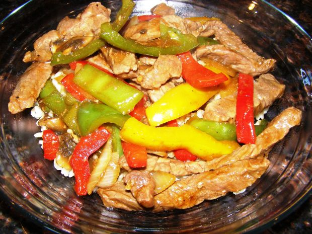
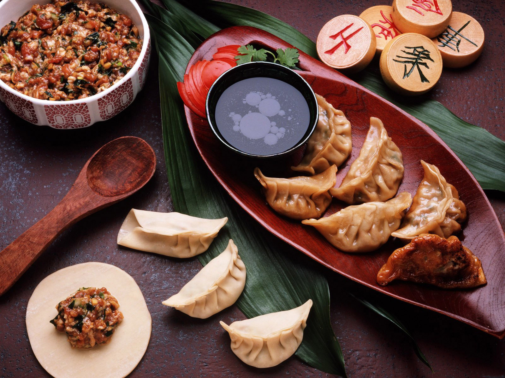
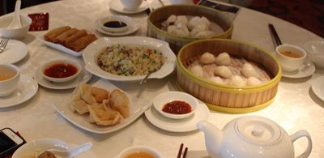

| Home | Cuisine | Recipe | Ingredients | About |
Chinese cuisine is extremely diverse due to the various climates that exist within the country. In China, gastronomy is considered an high art and has been refined over its long history. In the south, rice was the staple food while wheat took this role in the north. Chinese meals will contain the four natures and five tastes. The four natures are hot, warm, cool, and cold; the five tastes are pungent, sweet, bitter, sour, and salty.
 |
 |  |  |

|

|
Additional Information Common Ingredients Oyster Sauce, Soy Sauce, Rice Wine, Chili, Five-Spice Powder, Noodles, Rice, Peanut Oil Techniques stir-fry, xing wei, steaming, red braise Dishes Chinese Pepper Steak, Dumplings, Stir-fry, Eggrolls Climate Ranges from Tropical to Subarctic |